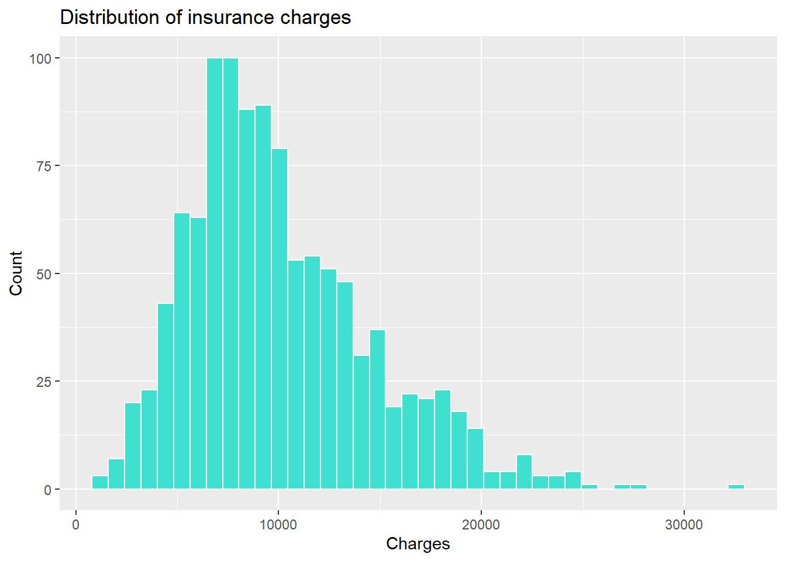

Insurance Costs – Analysis of Factors Related to Costs
Author
Isabel Holm
Published
April 13, 2026
Introduction
This report presents an analysis of insurance cost data with the aim of identifying which factors are most strongly associated with individual insurance charges. The dataset contains information on customer demographics, lifestyle factors, health-related variables, and insurance history.
The purpose of this analysis is twofold: first, to explore and describe patterns in the data through statistical summaries and visualizations; and second, to build a regression model that can help explain variation in insurance costs and potentially serve as a support tool in future pricing decisions.
Method
The analysis was conducted in R and structured across three main stages: data preparation, descriptive analysis, and regression modeling.
Data Preparations
The dataset was loaded using the readr package and initially inspected using glimpse() and summary() to understand its structure and variable types. Missing values were identified in three variables: bmi (28 missing), exercise_level (22 missing), and annual_checkups (20 missing). These were retained in the dataset and excluded on a case-by-case basis in calculations.
Categorical variables were standardized by trimming whitespace and applying consistent title case formatting, before being converted to factors. A new ordered variable, age_group, was created by binning age into five intervals (18–30, 31–40, 41–50, 51–60, 61–75) to support group-level comparisons in the descriptive analysis.
Descriptive Analysis
Summary statistics for the target variable charges were computed, including mean, median, standard deviation, min, max, and interquartile range. A range of visualizations were also produced using ggplot2 to explore the distribution of charges and its relationship with key variables. For the purpose of this report, only the most relevant findings are presented and discussed in the result section next.
The dataset contains 1,100 observations. Insurance charges range from 1,204 to 32,559, with a mean of 10,060 and a median of 9,124. The gap between the mean and median suggests a right-skewed distribution, where a smaller number of high-charge customers pull the average upward. The standard deviation of 4,574 and an interquartile range of 5,873 indicate considerable spread in charges across the dataset.
Missing values present in bmi,exercise_level, and annual_checkups were excluded on a per-calculation basis using na.rm = TRUE, meaning all 1,100 observations are retained in the dataset and only omitted where the relevant variable is missing.
Distribution of charges
Code
ggplot(costs, aes(x = charges)) +geom_histogram(bins =40, fill ="turquoise", color ="white") +labs(title ="Distribution of insurance charges", x ="Charges",y ="Count")

The histogram confirms the right-skewed distribution noted in the summary statistics. The majority of customers have charges clustered between approximately 3,000 and 12,000, with a long tail extending toward the higher end. This suggests that while most customers incur moderate costs, a smaller group generates significantly higher charges, a pattern worth keeping in mind when interpreting the regression results.
Charges per group
Charges by insurance plan type
Code
ggplot(costs, aes(x = plan_type, y = charges, fill = plan_type)) +geom_boxplot() +labs(title ="Charges by insurance plan type",x =NULL,y ="Charges") +theme(legend.position ="none")
Charges by insurance plan type show that Premium plan customers tend to have somewhat higher median charges compared to Basic and Standard customers. The Standard plan displays the widest spread and the most outliers at the upper end, suggesting greater variability in costs among that group. The difference between plan types is moderate, indicating that plan type alone may not be a strong standalone predictor of charges.
Charges by smoking status
Code
ggplot(costs, aes(x = smoker, y = charges, fill = smoker)) +geom_boxplot() +labs(title ="Charges by smoking status",x =NULL,y ="Charges") +theme(legend.position ="none")
Smoking status shows one of the clearest group differences in the dataset. Smokers have a considerably higher median charge of around 16,000 compared to approximately 8,000 for non-smokers. The interquartile range for smokers also sits entirely above the median for non-smokers, indicating that even typical smoker costs exceed what most non-smokers pay. This suggests smoking is likely to be one of the stronger predictors in the regression model.
Charges by chronic condition
Code
ggplot(costs, aes(x = chronic_condition, y = charges, fill = chronic_condition)) +geom_boxplot() +labs(title ="Charges by chronic condition status",x =NULL,y ="Charges") +theme(legend.position ="none")
Customers with a chronic condition show notably higher charges than those without, with a median of around 13,000 compared to approximately 8,000 for the non-chronic group. The spread among chronic condition customers is also tighter, suggesting a more consistent cost pattern within that group. This points to chronic condition status as another likely significant predictor in the regression model.
Charges by age group
Code
ggplot(costs, aes(x = age_group, y = charges, fill = age_group)) +geom_boxplot() +labs(title ="Charges by age group",x =NULL,y ="Charges") +theme(legend.position ="none")
Charges show a clear upward trend across age groups, with median charges rising steadily from around 8,000 in the 18–30 group to approximately 12,000 in the 61-75 group. The spread also widens in older groups, particularly in the 61-75 bracket, suggesting greater variability in costs among older customers. This pattern aligns with the expectation that age is positively associated with insurance charges and indicates it will likely be a meaningful predictor in the regression model.
Continuous predictors and charges
Age against charges, with smoking status
Code
ggplot(costs, aes(x = age, y = charges, color = smoker)) +geom_point(alpha =0.4) +geom_smooth(method ="lm", se =FALSE, color ="tomato") +labs(title ="Age vs insurance charges (with smoking status)")
`geom_smooth()` using formula = 'y ~ x'
The scatter plot of age against charges, colored by smoking status, reveals two fairly distinct clusters. Smokers consistently occupy the upper portion of the chart across all age groups, while non-smokers cluster at lower charge levels. The overall trend line shows a positive relationship between age and charges, but the separation between smokers and non-smokers suggests that smoking status may have a stronger influence on charges than age alone.
Age against charges, with chronic condition
Code
ggplot(costs, aes(x = age, y = charges, color = chronic_condition)) +geom_point(alpha =0.4) +geom_smooth(method ="lm", se =FALSE, color ="tomato") +labs(title ="Age vs insurance charges (with chronic condition)")
`geom_smooth()` using formula = 'y ~ x'
When grouping by chronic condition, the separation between groups is less pronounced than with smoking status. Customers with a chronic condition tend to have somewhat higher charges, but there is considerable overlap between the two groups. The positive relationship between age and charges holds regardless of chronic condition status.
Regression analysis
……..
Conclusions
………
Limitations
……..
Running Code
When you click the Render button a document will be generated that includes both content and the output of embedded code. You can embed code like this:You can add options to executable code like this
[1] 4
The echo: false option disables the printing of code (only output is displayed).
Include a plot
Code
ggplot(costs, aes(x = sex, y = charges, fill = sex)) +geom_boxplot() +labs(title ="Charges by gender",x =NULL,y ="Charges") +theme(legend.position ="none")
{#fig-Distribution of insurance charges-test fig-alt=‘..more descriptive stuff here’ width=50%}


-1.png)
-1.png)
 {#fig-Distribution of insurance charges-test fig-alt=‘..more descriptive stuff here’ width=50%}
{#fig-Distribution of insurance charges-test fig-alt=‘..more descriptive stuff here’ width=50%}